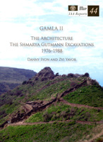

Danny Syon and Zvi Yavor
Gamla II: The Architecture (The Shmarya Gutmann Excavations, 1976-1988)
Jerusalem: Israel Antiquities Authority, 2010
 |
The importance of Gamla as the best preserved-and to date the most extensively excavated-late Second Temple period Jewish site in the north cannot be overstated. It provides direct archaeological evidence, rich in quantity and quality, from a site not inhabited after 67 CE, for the notoriously elusive first centuries BCE and CE in Galilee. Scholars, who have in the past relied on much later evidence to reconstruct life in the first century-a method with its inherent, but not always considered, dangers-will now have a corpus of closely dated material to build upon. Copies may be ordered by contacting: |
| Back to Publications | Table of Contents |